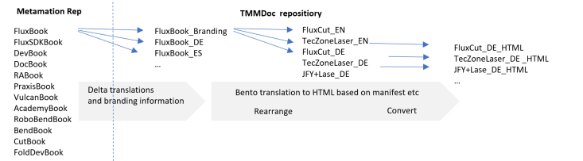

Documentation
Steps
Documentation covers the following steps
-
Writing Master document (e.g. FluxBook)
-
Translation
-
Branding (e.g. replacing FluxBend → TecZoneBend and changing color scheme)
-
Rearranging (e.g. TecZoneBend):
-
TRUMPF intro page (Homezone)
-
Flux Introduciton
-
Bend chapter
-
Applicatin setting
-
TRUMPF Impressum
-
-
Converting into HTML via Bento
-
Hosting the HTML pages via Onrender.com
-
Putting external URL links on the onrender.com pages

Design principles
-
All content are written only once in FluxBook
-
N translations should be only done once for all brands (TMM internal, Trumpf, JFY, Lantek)
-
only delta text files are given to the translation office which will reduce the costs significantly
-
The translated documents get rearranged to M products (TZBend standalone, TZBend Boost, JFY+ etc)
→ the multiplication of N * M translatios and products split up in many HTML hostings